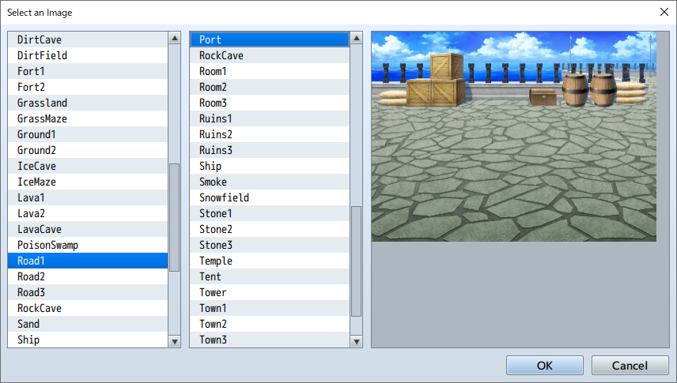

RPG MAKER MZ HELP
Map

Map Properties
Data Settings
The Map Properties Window will be displayed when you create a new map or by right-clicking the map and selecting "Edit". In this window, you can edit things like the size of the map or the tileset used to design it, conditions for BGM or encounters (when a battle starts) with troops, and other behavior during gameplay.
Parameter Details
Basic Settings
-
Name
The name of the map event. This property is used only in the editor and does not affect the game.
-
Display Name
The name of the map that is displayed when the player moves onto that map.
-
Tilesets
Specifies tilesets to be used in the design of the map.
-
Width/Height
The size of the map. The [Width] and [Height] can each be set as a value between 0 and 256. When making the map smaller after creation, parts which extend beyond the new size will be deleted.
-
Scroll Type
Determines how the map loops. When you set the map to loop, the edge pairs of the map that you designate will connect and allow the player to loop from one edge to the other.
- No Loop
- There will be no looping.
- Loop Vertically
- The upper and lower edges of the map will be connected.
- Loop Horizontally
- The left and right edges of the map will be connected.
- Loop Both
- Both the upper and lower, and the left and right edges of the map will be connected.
-
Specify Battleback
When enabled, the background when a battle occurs on this map can be designated using a combination of two types of images.
When not specified, a background that conforms to the terrain on the field will be automatically selected. For other maps, a background which uses a processed image of the map screen will be used. -
Encounter Steps (Enc. Steps)
Determine the frequency of random encounters by setting the average number of steps a player walks on the map before an encounter occurs. This can be set between 1 and 999 steps, where one step equals the movement distance of a single tile. Set this value low when you want monsters to appear more frequently.
-
Autoplay BGM/Autoplay BGS
When enabled, BGM (background music) and BGS (background sounds) will start playing automatically when the player is on a map. Select the sound files for each that you wish to play.
When the map and battle BGM is identical, the music will not stop when switching between screens. -
Disable Dashing
When enabled, a player cannot dash on this map.
Parallax Background
An image that appears in the transparent part of the map. Select the file you want to use in the window that appears when you click [...].
When you enable [Loop Vertically] or [Loop Horizontally], the parallax background will scroll according to the movement direction of the player. Also, by setting the scroll to a value other than 0 (-32 to 32), it will automatically scroll. If it's a positive value, it will scroll left/up. If it is a negative number, it will scroll right/down. The higher the absolute value, the faster it will scroll.
When you enable [Show in the Editor], you can check the parallax background that you set in the editor. However, the way it is displayed may differ in the actual game.
Also, when you add a "!" to the beginning of a parallax background image file name, the parallax will become 0.
Memo
Here you can freely add notes when creating your game. The content is used only in the editor and does not affect the game.
Encounter
Troops that randomly appear while the player moves around the map. Specify the following content in the window that appears when you double click the blank within the field. If you left click on a registered troop, you can also copy or delete it using the context menu.
- Troops
- Define the troops you want to configure.
- Weight
- Set the priority level (0 to 100) for troops to appear as battle opponents in an encounter. When there are multiple troops configured, the higher a troop's priority value, the higher its encounter rate.
The encounter rate for troops will be calculated based on a percentage of the total weight of all troops.
So for example, let's assume that Troop A's weight is 9, B's is 7, and C's is 4. In this case, Troop A's encounter rate is 9/20 (the total weight being 9+7+4), or 0.45. In other words, it has a 45% chance of appearing. Likewise, Troop B's is 7/20 (35%) and Troop C's is 4/20 (20%). - Scope
- Specifies the region where this troop will appear. Specify "Entire Map" when you want it to appear regardless of region. To have an enemy encountered only in a specified region, select "Specify by Region ID" and specify the region ID (up to 3 regions). Please refer to the section below to see how to set a region.
Setting the Region
The [Region] specified in the Encounter settings of a map indicates the regions in which troops appear. One map can be divided into 255 regions.
*To set up a region, select the [R] tab in the Tileset to enter the Region Editor Mode. Click in the upper left of the window to select the region ID (1 to 255), and by clicking on the Map View, the region will be configured to the tile in that position. Only one region ID can be assigned per tile.